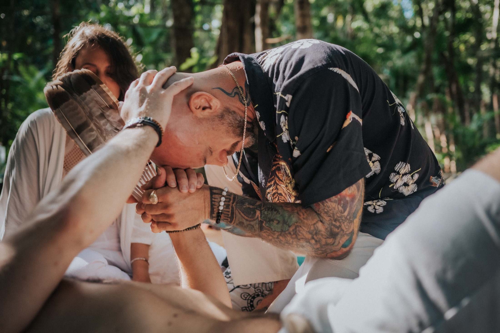
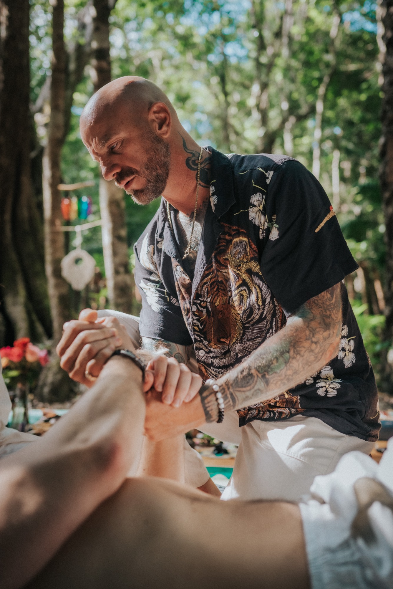

Bufo (5-MeO-DMT) Ceremony
A Bufo (5-MeO-DMT) ceremony is short, often 15 to 30 minutes, but it asks everything of you. So every part of it, the screening, the space, the facilitation, is held with care, from the first breath to integration.
What a Bufo Ceremony Is
Bufo (5-MeO-DMT) is the sacred secretion of the Sonoran Desert Toad, received by smoking, with a rapid onset and a short, total journey. In ceremony it can dissolve the boundary between self and everything else, a felt experience of unity that many describe as meeting the divine. Held well, it becomes one of the most profound experiences a person can have.
 The ceremony space
The ceremony space
The Ceremonial Process
Nothing about ceremony day is a surprise. You've been screened, prepared, and taught what you're walking into. When it's time, you're settled with rapé and sound, the medicine is received in a single breath, and the journey begins within moments.
For 15 to 30 minutes you surrender completely, held the entire time by your facilitator. As you return, there is no rushing. You're met gently and given space to land, followed by integration, where you make sense of what moved through you with your facilitator's support.
Safety Is the Foundation
A Bufo ceremony is only as safe as everything around it. This is what is always in place, long before the medicine is ever received.
 Held, one to one
Held, one to one
One to One, Always
From the first breath to the moment you fully return, a trained, heart-centered facilitator is with you, one to one. Not watching a room, not moving between people. With you.
This is the heart of how we hold Bufo. The medicine asks for complete surrender, and complete surrender is only possible when you are completely safe. Your facilitator holds that safety, so all you have to do is let go.

Never rushedThe Atmosphere
A Bufo ceremony is never rushed and never crowded. The space is prepared with prayer, ceremony, and energetic protection, a private, sacred setting that honors the spirits and the land, and holds you within it.
Every detail is arranged so that when you arrive, there is nothing to manage and nothing to fear. Only a quiet, protected space, the medicine, and someone who has walked this path holding you through it.
What is Bufo and 5-MeO-DMT? →Begin
Our Bufo (5-MeO-DMT) ceremonies are held within our retreats in Mexico. See upcoming dates and locations and find the one that's right for you. Every journey begins with a simple health screening, and your safety and readiness are honored every step of the way.